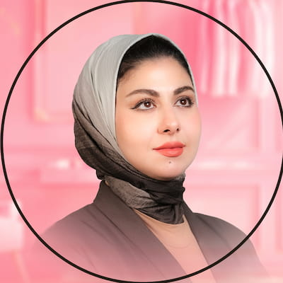

جاري فتح الملف
نحن لا نبيع خدمات تسويقية.... نحن نصنع شركاء نجاح. فريق ELITE يبني لك أساساً قوياً يضمن لك حجوزات مستمرة، ابتداءً من بناء سلطتك الطبية وحتى أتمتة حجوزات عيادتك.
كل رقم بالأسفل نتيجة حملة حقيقية لعيادة أو مركز طبي عمل معنا.
من الشك المسبق، إلى منظومة حجوزات متكاملة. نماذج حقيقية لعيادات حولناها من التردد إلى السيطرة على السوق.

لما بدأت، كنت جديدة ببغداد. أول عيادة خاصة إلي كانت داخل مستشفى بمنطقة السيدية، وكان الوضع واضح جداً: صفر متابعين، صفر مراجعين، وصفر حضور بالسوق.
وكان التحدي مو بس أجيب حجوزات… التحدي الحقيقي كان: شلون أبني اسمي كطبيبة جديدة من الصفر؟
لذلك بالبداية ما ركزت مباشرة على البيع. قررت أن أول مرحلة تكون بناء جمهور وثقة. اشتغلت على خطة تسويقية متكاملة تشمل المحتوى، الهوية، طريقة الظهور، الإعلانات واستهداف الجمهور المناسب. كان هدفي أخلي الناس تعرفني، تفهم اختصاصي، وتشوف خبرتي… قبل ما أطلب منهم يحجزون.
كان شهر بناء الثقة. خليت الجمهور يتعرف عليّ كطبيبة، على شخصيتي، اختصاصي وطريقة تعاملي. ما استعجلت النتائج، لأني أعرف أن المريض، خصوصاً بالمجال الطبي، ما يحجز من أول مشاهدة. هو أولاً يشوفك… بعدين يتابعك… بعدين يثق بيك… وبعدها يبدأ يفكر بالمراجعة.
غيرت استراتيجية المحتوى. بعد ما بدأ يتكون جمهور، انتقلت من مرحلة «من هي د. حنين؟» إلى مرحلة «ليش المريض يحتاج يراجعني؟». بدأت أشتغل على محتوى أكثر ارتباطاً بمشاكل المريض، اعتراضاته، مخاوفه والأسئلة اللي تدور بباله.
وهنا بدأ التغيير يظهر. المراجعين بدأوا يزيدون تدريجياً، وما عاد الموضوع مجرد رسائل ومتابعين… بدأت تصير حجوزات فعلية وعمليات.
ومع استمرار الخطة وتحسين المحتوى والإعلانات بناءً على النتائج، صار عندي شيء أهم من الأرقام: صار عندي حضور حقيقي بالسوق.
اليوم، أني مو مجرد طبيبة عندها صفحة على السوشيال ميديا. صفحتي أصبحت واحدة من أهم مصادر المراجعين والحجوزات إلي.
والأهم؟ إن هذا كله بدأ من: صفر متابعين، صفر مراجعين، وأول عيادة خاصة إلي ببغداد.
وهنا كانت الفكرة الأساسية من البداية: مو هدفي أسوي صفحة حلوة إلي كطبيبة… هدفي أبني منظومة تسويقية تجيب مريض حقيقي.
من الصفر… إلى الاعتماد الكامل على صفحاتي.
أني د. عبدالعزيز الربيعي، اختصاص جراحة الوجه والفكين، كان عندي حضور على السوشيال ميديا، لكن بشكل محدود: متابعين قليلين، وصول ضعيف، وحضور ما يعكس مكانتي كجراح بورد.
وفوق هذا، كان عندي تردد طبيعي. كثرة شركات التسويق والوعود الموجودة بالسوق خلت موضوع الثقة بالتسويق مو سهل. وكان سؤالي ببساطة: «هل فعلاً السوشيال ميديا ممكن تجيبلي مراجعين؟»
قررنا نشتغل سوا.
ما بدأنا بالإعلانات مباشرة. أول خطوة كانت نرتب حضوري من جديد، بحيث يكون المحتوى، الصورة، طريقة الظهور والرسالة التسويقية تليق بيا كدكتور جراح بورد واختصاصي الدقيق.
وبنفس الوقت، بنينا خطة تسويقية واضحة: شنو ننشر؟ لمن نحچي؟ شنو المشاكل اللي نستهدفها؟ وشلون نحول المتابع إلى مراجع؟
بدأت الاستفسارات تزيد بشكل واضح. ومع الوقت، ما بقت مجرد رسائل ومشاهدات… عدد المراجعين بدأ يرتفع. وبعدها بدأت العمليات تزيد بشكل ملحوظ.
وهنا تغيرت نظرتي للتسويق. لأن اللي كنا نحچي عنه بالبداية كـ«خطة تسويقية»… صرت أشوفه بشكل عملي: استفسارات ← حجوزات ← مراجعين ← عمليات.
واليوم، التسويق بالنسبة إلي مو شيء ثانوي أو تجربة مؤقتة. صار جزء أساسي من عملي، ومعتمد عليه كمصدر مستمر لجذب المراجعين.
والقصة مو قصة «سوشيال ميديا جابت متابعين». القصة الحقيقية هي: حضور عادي ← بناء ثقة ← استفسارات ← مراجعين ← عمليات ← منظومة تسويقية أعتمد عليها.
وهذا بالضبط الفرق بين إدارة صفحة وبين بناء منظومة تسويق لطبيب.
لما بدأت أني د. زينب، اختصاص جراحة العيون — بورد عربي، وياهم، كنت حرفياً أبدأ من الصفر: صفر متابعين، صفر مراجعين من السوشيال ميديا، وما عندي أي ظهور فعلي على المنصات.
لكن المشكلة ما كانت بس بالحضور. كانت عندي مخاوف حقيقية: «فعلاً راح يجون مراجعين؟» «أخاف أطلع مو حلوة بالتصوير.» «أخاف أتعب إذا بلشنا.»
وهنا كان دورهم مو بس يسوون إلي محتوى. كان دورهم يخلون عملية التسويق نفسها سهلة ومريحة عليّ.
بنينا حضوري من البداية، ورتبنا المحتوى وطريقة ظهوري، واشتغلنا على خطة هدفها مو مجرد مشاهدات… بل الوصول إلى المريض الحقيقي.
وبدأ الفرق يظهر. صار عندي وصول ممتاز، وبدأ عدد المراجعين يزيد تدريجياً.
المخاوف اللي كانت بالبداية… تحولت إلى شيء ترفيهي بالنسبة إلي. طلعت كلش حلوة بالتصوير، وصرت أحب التجربة والتعامل وياهم.
حتى وقت التصوير، ما صار عليّ أحفظ نصوص طويلة أو أفكر شأگول. كاتب المحتوى يجهز النصوص مسبقاً، وأني وقت التصوير كل اللي عليّ أحچي النص.
فبدل ما يكون التصوير عبء عليّ… صار جزء بسيط وممتع من يومي.
وهذا بالنسبة إلي هو النجاح الحقيقي: مو بس أن الصفحة تكبر… إن أني كطبيبة أحب التجربة، وأشوف نتائجها، ويصير التسويق جزء سهل من شغلي.
من صفر حضور… إلى حضور قوي، مراجعين، وتجربة حبيتها أني د. زينب.
فريق Elite هو شريكك الاستراتيجي المتخصص حصراً في القطاع الطبي (عيادات، مراكز طبية، ومستشفيات). نحن لا نشتت جهودنا في مجالات أخرى، بل نركز على ما نتقنه تماماً
قبل إطلاق أي حملة، نقوم بتشخيص رقمي دقيق: لماذا لا يكتمل الحجز؟ أين تتسرب ثقة المريض؟ وماذا يرى المراجع فعلياً عندما يزور حساباتك؟ بناءً على هذا التشخيص، نبني منظومة متكاملة تضمن لك حجوزات مستمرة وأرقاماً تتحقق شهرياً
التسويق الطبي فقط، مع فريق إنتاج داخلي متكامل لضمان أعلى معايير الجودة.
نُجري تدقيقاً لعيادتك ونحلل منافسيك لاكتشاف الثغرات قبل بدء العمل
نعمل كقسم التسويق الداخلي الخاص بعيادتك لنكبر معاً